10. 監視系¶
10.1. Cloud Watch¶
AWSのリソースやAppの監視を行うサービス
各種メトリクス（パフォーマンスの時系列データ）の監視機能だけでなく、ログを収集機能やそれらの情報を分析集約する機能を持つ。
以下の代表的な機能についてまとめる。
CloudWatch Metrics：メトリクスの集計、可視化
CloudWatch Alarms：メトリクスに基づいたアラームの発行
CloudWatch Logs：ログの監視、保存
CloudWatch Logs Insights：収集したログの検索分析
CloudWatch Dashboards：各機能で収集した情報を集約
CloudWatch Events：イベントや時間を契機に処理を実施
10.1.1. CloudWatch Metrics¶
監視対象のリソースのメトリクスを収集するサービス
統合CloudWatchエージェントというツールを利用することでAWSのサービスに限らず、オンプレミスのメトリクスを収集することが可能。
10.1.1.1. Cloud Watch Metricsの登場人物¶
メトリクス
メトリクスとは、システムのパフォーマンスを示す時系列データポイントのセットのことを指す。 取得期間は各サービスで設定可能だが、基本は１分程度名前空間
収集したメトリクスを格納する入れ物で、異なるサービスのメトリクスは異なる名前空間に格納される。
AWSのサービスはAWS/"service"という名前空間になる。ディメンジョン
メトリクスを一意に識別する名前と値で、インスタンス名やインスタンスI D
10.1.1.2. メトリクス¶
■標準メトリクスの例
ネットワークIO
ディスクIO
EBS ボリュームIO
■Metrics Math
既存のメトリクスと数式を利用して、新しいメトリクスを作成することができる。
■標準メトリクスとカスタムメトリクス
EC2のCPU使用率など、事前にAWSで準備されているメトリクスを標準メトリクスと呼ぶ。
標準メトリクスに準備されていないメトリクスはカスタムメトリクスとして、独自に定義する必要がある。
その場合、CloudWatchエージェントを使用して、カスタムメトリクスを送信するように設定する。
カスタムメトリクスはAWS CLIやPutMEtricData APIを利用して定義する。
カスタムメトリクスを送信する場合はCloudWatchAgentServerPolicyがアタッチされたIAMロールを作成して、割り当てる必要がある。
なお、EC2だけでなく、オンプレでも監視ができるがその場合も、CloudWatchエージェントのインストールが必要である。
10.1.1.3. 異常検出¶
統計および機械学習を利用してメトリクスの異常を検出することができる。 メトリクスの新規作成時に以下の画面で設定可能
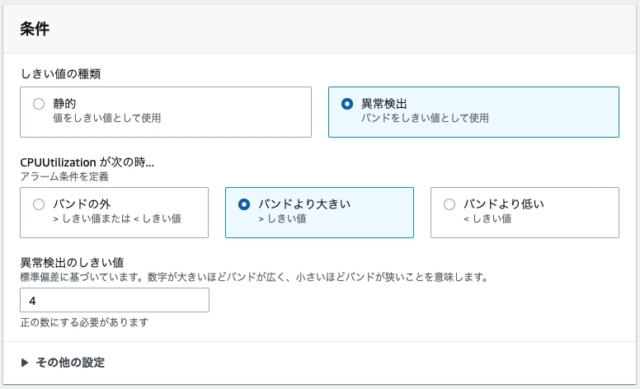
時間/日/週単位のパターンを組み合わせて機械学習モデルを構築し、想定値をバンドのように示してくれる。
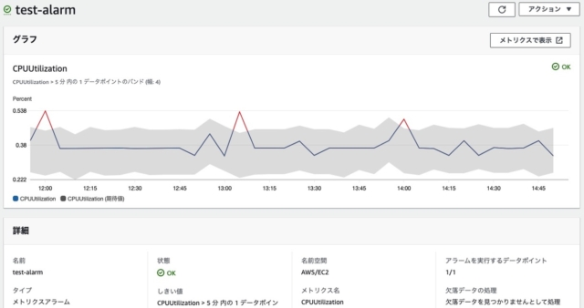
10.1.2. CloudWatch Alarms¶
CloudWatch Metricsで収集したメトリクスを監視対象として、以下を設定できる
アラームの発行
アラーム後に実行するアクション(Eメールを送信など)
アラームの状態は以下の３つに分類することができる
OK：閾値以下で正常
ALARM：閾値以上で以上
INSUFFICIENT_DATA：データが不足していて、状態の判断が不可能
アラームを発行する際に、1回の閾値超えでアラームとせずにM回中N回閾値を超えるとアラームとするといった設定が可能。
欠落データの扱い方の種類についてと合わせて、アラーム状態を理解しておくと良い
missing：アラーム評価範囲全てのデータポイントがない場合で、INSUFFICIENT_DATAのアラームが発行される
breaching：不良として扱う
notBreachin：良好として扱われる
ignore：現在のアラーム状態を維持する
10.1.3. CloudWatch Logs¶
AWSサービスやアプリケーションのログファイルの監視、保存、アクセスができるサービス
ログは階層構造となっている
ロググループ：ログストリームを集約したもので、保持監視アクセス制御について同じ設定を共有するものをグループ化可能
ログストリーム：タイムスタンプごとに集約したログイベント
ログイベント：実際の挙動が記録されたログ
ロググループレベルやログストリームレベルでのフィルタリングが可能なことを踏まえてログ設計をするべき。 ログの種類ごとにロググループを作成し、ログを出力するアプリケーションのインスタンごとにストリームを作成するとわかりやすい。
10.1.3.1. 保存期間とS3連携¶
ロググループは保管期間を設定できるが、ログの保管料金が割高のため、S3にエクスポートすることがおすすめ。 手動によるS3エクスポートか一度Kinesis Data Firehoseを経由してS3にエクスポートできる。
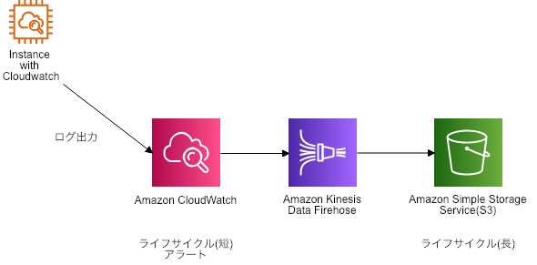
10.1.3.2. サブスクリプションフィルタとメトリクスフィルタ¶
■サブスクリプションフィルタ
指定したフィルタパターンに合致する文字列がログに含まれていた場合に、LambdaやFirehoseなどのAWSサービスをイベント駆動（サブスクリプション）する機能。
サブスクリプションフィルタで検知したログは一度Lambdaで処理する必要があり、直接SNSの発酵を行うことはできない点に注意。
Lambdaの同期処理のエラー検出などで利用される。
■メトリクスフィルタ
定義したファイルパターンに合致する文字列がログに含まれていた場合に、CloudWatch Mericsにメトリクスデータとして送信する機能。
CloudWatch Metricsで可視化することが可能であり、CloudWatch Alarmsと組み合わせて、詳細なるルール設定の上で、イベントを発出することができる。
10.1.4. CloudWatch Logs Insights¶
専用のクエリ言語使って、CloudWatch Logs内のログの検索と可視化をする機能
S3にエクスポートしたデータに対してクエリを発行することはできない点に注意する。
10.1.5. CloudWatch Dashboards¶
Cloud Watchのコンソール画面においてダッシュボードを作成、カスタマイズすることで各機能での監視情報を集約することができる。
マルチアカウントやマルチリージョンの監視情報を集約することが可能で、ダッシュボードでシステム全体の稼働状況を確認することも可能。
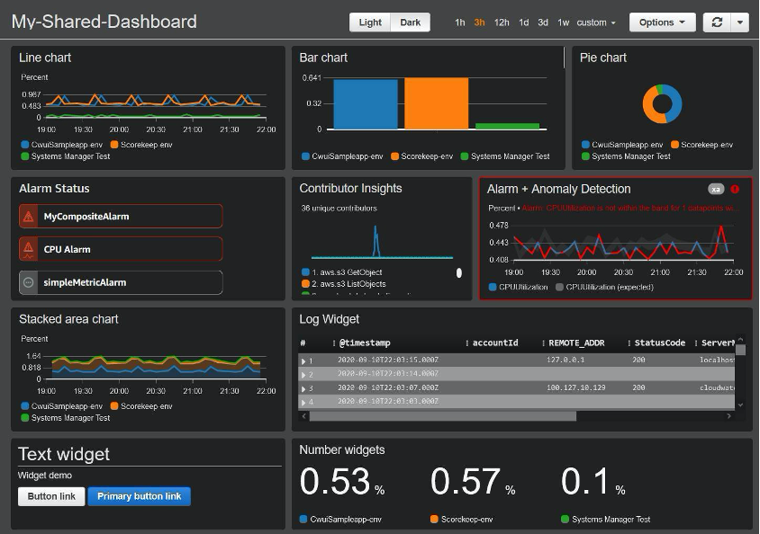
10.1.6. CloudWatch Events¶
システム側のイベントやスケジュールを契機にして、後続処理を実行させることができる。
皇族のサービスとしてEvent Bridgeが提供されている
10.1.6.1. イベント契機¶
システムソース（イベントの発生元）の変更と事前に定義したルールを照らし合わせて、一致した場合に、後続の処理を実行する
10.1.6.2. スケジュール契機¶
スケジュールでは、特定の時間や時間間隔を定義して処理を実行する。
特定時間の定義にはCron式を利用する
cron(分 時 日 月 曜日 年)
時間感覚にはRate式を利用する
rate(value unit)
value：正の数値
unit：minite,minites,hour,hours,day,days
10.2. Cloud Trail¶
AWSで実行されるAPIの実行履歴を記録することが可能なサービス
AWSアカウント内のユーザー、ロール、サービスがコンソール・CLI・SDKから実行したAPIアクションをイベントとして記録する。 CloudTrailを有効化することで15分後とに出力され、90日間の記録を残すことが可能。S3やCloudWatchに連携することも可能。
CloudTrailの有効化はリージョンごとの設定だが、一括で有効化することが推奨されている
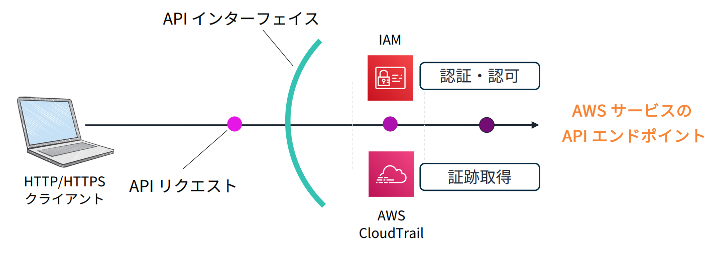
10.2.1. 記録対象のイベント¶
全部で３種類のイベントがあり、記録対象を選択することができる。
管理イベント
AWSアカウントのリソースで実行される管理オペレーションが対象
IAMポリシーのアタッチやネットワークの構成変更などが対象となるデータイベント AWSサービスで取り扱われるリソースやデータを対象にした操作オペレーションが対象
S3のオブジェクトやLambda関数の実行が対象となる。インサイトイベント 管理イベントの異常な挙動やエラーを示した場合が対象
S3バケットが大量に作成されたり、API呼び出し頻度が跳ね上がったりしていると、異常を検知する。
10.2.2. イベント履歴の調査¶
CloudTrail コンソール画面
複雑な検索はできないが、フィルタリングなどを手動で実施できる。S3 Athena
S3内の構造データを対象にSQLで分析可能 読み込むデータの対象を絞り込むことで、データ量をを削減することができ、費用の削減につながる。Elasticsearch Service
オープンソースのElasticSearchとkibanaを組み合わせたサービスCloudWatch Insight
CloudWatchとの連携ではデータロードが不要なため高速であり、ある程度複雑な検索が可能
10.2.3. CloudTrailのセキュリティ¶
■暗号化
SSE-KMSを使って暗号化して保存可能
■改竄対策
SHA-256の暗号化を利用して、ログの改竄がないことを証明する署名を付与することができる。
CLIからvalidate-logsコマンドより、改竄確認ができる。
10.3. X-Ray¶
分散アーキテクチャでの処理状況をトレーシングし、呼び出し関係、実効成否、レスポンス時間を可視化することができる。 マイクロサービスなどの複数のサービスが連携し合うアーキテクチャに適したサービス
アプリケーション全体としての処理の流れを整理して、ボトルネックなどを洗い出すことができる。
可視化ツールなので Black Belt はわかりやすい。
10.3.1. X-Rayの概念¶
セグメント
リソース名・リクエスト詳細などの動作に関するデータ（どこまでどこを測定するか）サブセグメント
AWSのサービス・外部HTTP APIなど呼び出しに関する追加の詳細情報（セグメントの中でどこを一塊にするか）トレース
1つのリクエストで生成されたセグメントすべてを収集したもの
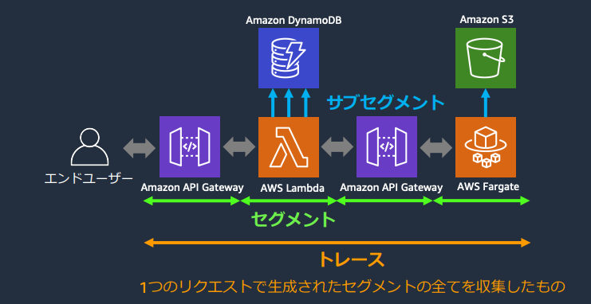
10.3.2. X-Rayの仕組み¶
トレースに含まれるセグメントを管理するために、リクエストごとに一意なトレースIDを発行する。
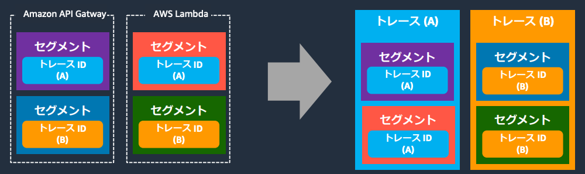
セグメントのつながりや順序を管理するために、トレース内のセグメントに対して一意なセグメントIDを発行する。
親セグメントIDによって、順序を決めることができる。
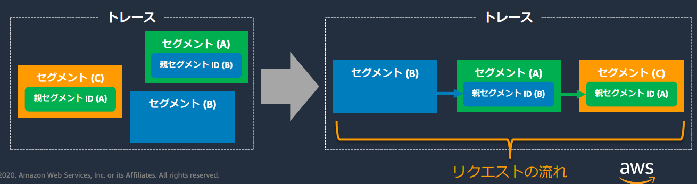
トレースIDとセグメントIDを使って、どのトレースに含まれるどの順番で実行されたセグメントかを整理することができる。
10.3.3. X-Rayの機能¶
サービスマップ
サービス単位やAWSサービス間の呼び出し成否や処理にかかった時間を可視化する
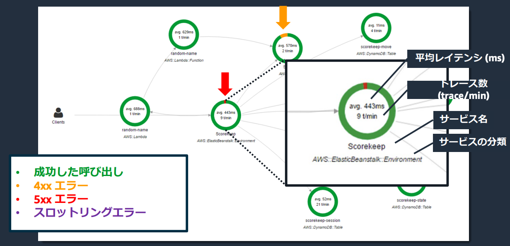
トレース
Appへの呼び出しの内訳を時間軸で並べて、リスト化するなど、詳細化する ボトルネックやエラー箇所を特定できる。
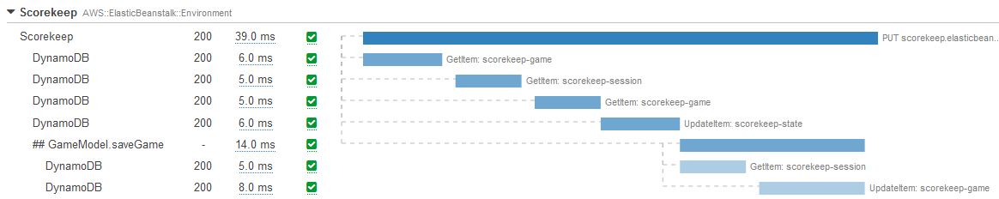
アナリティクス
各トレースの統計情報など分析する
10.3.4. 利用できる言語¶
メトリクス収集のSDKライブラリが提供されており、以下の言語で利用可能
Java
Node.js
python
C#
Ruby
Go
10.3.5. X-rayの利用¶
アプリケーションの中でX-rayのSDKライブラリを経由して、APIを呼び出す。
呼び出し方としてはAppから直接呼び出すのではなく、X-rayのデーモンを利用することが多い。 EC2ではデーモンをインストールする。
10.3.5.1. ECSでのX-Rayの利用¶
ECSでは別コンテナでデーモンコンテナを立ち上げる。 その際デーモンコンテナではX-rayのAPIを呼び出す権限をIAMで付与しておくことを忘れないようにする。
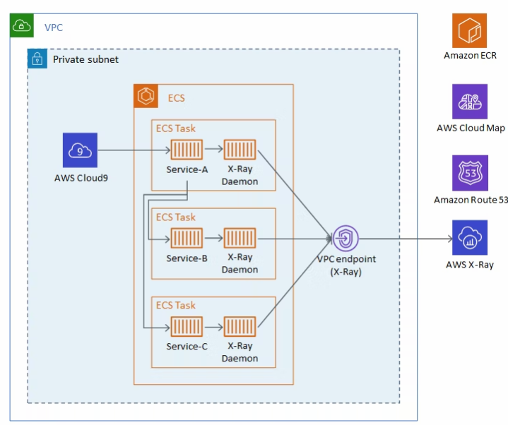
デーモンがECSで正しく検出されるようにするために、タスク定義ファイルにおいてポートマッピングとネットワークモードを設定して、アプリケーションがデーモンコンテナと通信できるように設定する必要がある。
ポイントとしては
AWS X-Ray デーモンはUDP ポート 2000 のトラフィックを読取る
AWS_XRAY_DAEMON_ADDRESS 環境変数でホストポートの設定
10.3.5.2. SQLクライアントでの利用¶
SQLクライアントにX-rayの設定を追加する場合は、DBへの接続ドライバーやSQLクライアントにCーRayの設定を行う。
10.3.6. フィルタ式¶
トレースを抽出するための機能で、時間のかかっている処理の抽出やステータスコードによる検索ができる
10.3.7. 注釈(Annotations)とメタデータ(Metadata)¶
■注釈
フィルタ式で使用するためのインデックス化されたキーとバリューのペア
これを利用することでフィルタ式の絞り込みを行うことができる。
■メタデータ
任意のタイプで指定できるキーとバリューのペア
フィルタ式で利用するインデックスは作成されない
10.3.8. CloudWatchとの連携¶
X-Rayで収集したデータは、CloudWatchに統合されており、CloudWatch ServiceLendsでサービスマップやトレースリストなどを確認することができる。